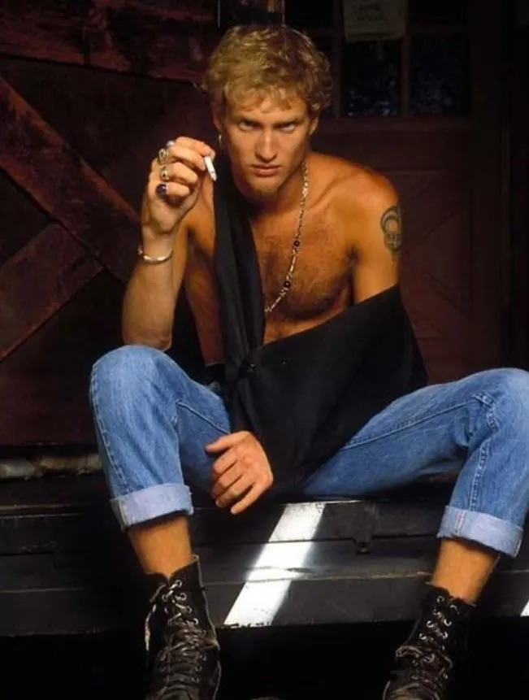
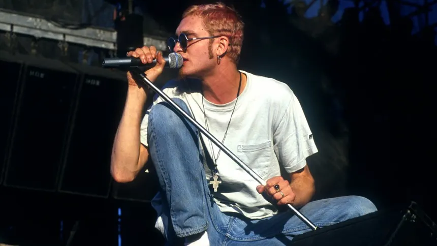
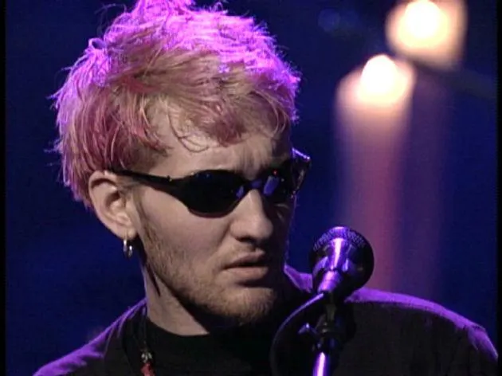
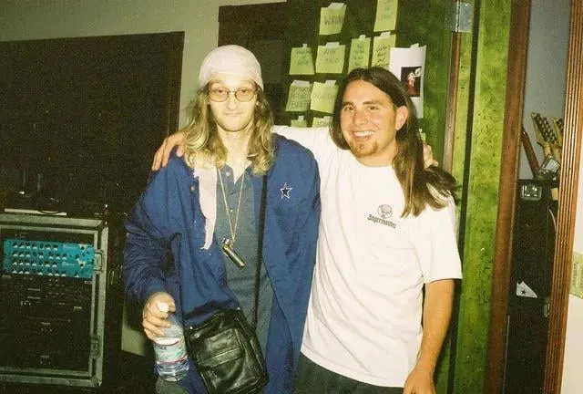

O Vocalista do Alice in Chains
#Jerry Cantrell #Mike Starr #Voltar #Mike Inez #Sean Kinney
Layne Thomas Staley nasceu em 22 de agosto de 1967 em Kirkland, Washington. Desde a infância, sua vida foi marcada por instabilidade familiar e desafios emocionais que moldaram sua personalidade introspectiva e sensível. Crescer sem uma figura paterna constante contribuiu para uma percepção precoce de isolamento e solidão. Mesmo assim, Layne demonstrou interesse pela música desde cedo, cantando e tocando instrumentos nas pequenas bandas locais da região.
Durante sua adolescência, Layne começou a compor suas primeiras letras, revelando temas sombrios e introspectivos. Ele explorava a música como forma de terapia pessoal, usando sua voz única para expressar emoções profundas. Nesse período, começou a experimentar drogas e álcool, influenciando o conteúdo lírico de sua carreira e sua persona artística.
Layne também vivenciou conflitos sociais típicos da adolescência, lidando com amizades instáveis e o desafio de se encaixar em grupos. A escola e os grupos musicais serviram como refúgio e espaço de experimentação, permitindo que ele descobrisse a intensidade de seu talento vocal. Suas experiências de vida precoce contribuíram para a construção da voz única e melancólica que definiria seu estilo no Alice in Chains.
Em resumo, a infância e adolescência de Layne Staley foram marcadas por desafios emocionais e instabilidade familiar, mas também por um profundo interesse pela música e uma habilidade vocal excepcional. Esses elementos formaram a base de sua carreira musical e influenciaram significativamente o conteúdo lírico e a estética sombria que se tornariam características do Alice in Chains.

Em 1987, Layne Staley conheceu Jerry Cantrell, iniciando a formação de Alice in Chains. A química entre Layne e Jerry foi imediata, unindo a voz poderosa de Layne aos riffs densos de Jerry. Nos primeiros anos, a banda trabalhou em estúdios e shows locais, aperfeiçoando seu som característico, que combinava grunge, heavy metal e rock alternativo.
Layne desempenhou papel central na composição, contribuindo com letras sobre alienação, sofrimento e vício. Com o lançamento do primeiro álbum, Facelift (1990), a banda ganhou reconhecimento nacional. Canções como "Man in the Box" e "We Die Young" destacaram sua habilidade de transmitir emoção e dor intensa.
Este período também marcou os primeiros conflitos pessoais de Layne com fama e expectativas externas, influenciando seu comportamento reservado. Mesmo assim, sua dedicação à música permitiu que Alice in Chains se destacasse rapidamente, abrindo caminho para o sucesso mundial.

Entre 1990 e 1993, Layne Staley e Alice in Chains atingiram o ápice de sua fama. Com Dirt (1992), a banda se tornou um dos principais nomes do grunge, ao lado de Nirvana, Pearl Jam e Soundgarden. Layne consolidou-se como uma voz icônica do rock, combinando intensidade, melodia e emoção em cada apresentação.
Durante essa fase, Layne começou a enfrentar as consequências do vício, mas ainda produzia letras profundas e memoráveis. "Would?", "Down in a Hole" e "Angry Chair" refletem seus conflitos internos, experiências com vício e percepção de dor e perda.
Layne também se destacou nos shows ao vivo, criando performances carregadas de emoção. Este período representa o auge de sua criatividade e da influência cultural de sua arte.

A partir de 1993, Layne Staley afastou-se progressivamente da vida pública devido ao uso intenso de drogas e problemas pessoais. Esse período foi marcado por reclusão, introspecção e dificuldades de saúde física e mental.
Durante esse tempo, lançou o EP Jar of Flies (1994), mostrando um lado introspectivo e melancólico. As músicas revelavam vulnerabilidade, dor e desespero, refletindo os desafios que enfrentava.
Este período evidenciou a complexidade de Layne: sua genialidade musical contrastava com sua luta constante contra o vício e a solidão. Mesmo limitado, seu impacto continuou significativo na cultura grunge.

Nos últimos anos, Layne tornou-se cada vez mais isolado, lutando contra a dependência química. Sua saúde deteriorou-se rapidamente, mas manteve conexão com a música, e suas letras continuaram a ressoar com fãs.
Em 5 de abril de 2002, Layne faleceu, deixando um legado musical e emocional incomparável. Sua contribuição para Alice in Chains e para o grunge é eterna, influenciando gerações de músicos e fãs.
{kind=link}
{kind=link}
{kind=link}
{kind=link}
{kind=link}